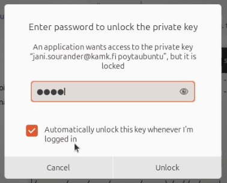

Lopuksi: Ubuntu opiskelukuntoon
Warning
Tämä ohje on tällä hetkellä aikansa nähnyt. Tilalle tulee yksinkertaisempi ohje, jossa on käytössä Dockerilla ajettu uv, joka pohjustaa cookiecutterin.
Lisäksi Ubuntu 24.04 vaihtuu 26.04:ään.
Tämän ohjeen tarkoitus on auttaa sinua pika-asentamaan tarvittavat ohjelmat siten, että voit työstää oppimispäiväkirjaa Linuxista käsin. Pohjaoletus on, että sinulla on Ubuntu jo asennettuna. Mikäli sinulla ei ole aiempaa Linux-kokemusta, ohjeen komennot saattavat tuntua osittain heprealta. Kannattaa palata tähän materiaaliin kurssin lopuksi: todennäköisesti huomaat, että ohjeissa ei ole mitään, mitä et osaisi tehdä itsenäisesti, ohjelmien omia dokumentaatioita seuraamalla.
Video-ohjeet
Video 1: Linux Perusteet 2025 kurssin ohjelmien asennusohjeet.
Yllä on upotettuna Youtube-video, jossa freesiin Ubuntu-asennukseen suoritetaan kaikki tämän ohjeen merkittävät vaiheet. Alla on tekstimuodossa lähes identtiset vaiheet sisältävä ohje. Voit valita, kumpaa haluat seurata - tai tutustutko kumpaankin.
Warning
Huomaa, että videon kohdasta "Docker Engine" jäi uupumaan Rootless Moden asennus. Se paikataan hieman myöhemmin ajassa 27 minuuttia. Eroa kirjoitettuun ohjeeseen on myös siinä, että ensimmäistä oppimispäiväkirjaa ei koskaan kirjoiteta, eikä sisältöä pusketa myöskään Gitlabiin.
Tekstiohjeet
Vaihe 1: Git
Avaa Terminal (gnome-terminal) eli pseudoterminaali. Tämä onnistuu monella eri tavalla:
- Pikanäppäin Ctrl+Alt+T
- Hiiren oikealla korvalla työpöydän tyhjällä alueella ja valitsemalla "Open Terminal"
- Klikkaa Win -näppäintä ja kirjoita hakukenttään "Terminal" ja paina enter.
- Avaa ruudun vasemmasta alalaidasta "Show Apps" ja kirjoita hakukenttään "Terminal" ja paina enter.
Kun Terminal on auki, aja seuraavat komennot, joskin siten, että korvaat oikeisiin paikkoihin oman nimesi ja oman sähköpostiosoitteesi:
# Upgrade software and install git
$ sudo apt update && sudo apt upgrade
$ sudo apt install git
# Set git configuration
$ git config --global user.name "Your Name"
$ git config --global user.email "your.name@kamk.fi"
$ git config --global pull.ff only
$ git config --global init.defaultBranch main
Warning
Ethän käytä ajamissasi komennoissa $-merkkiä. Se on yllä indikoimassa sitä, että komentoa ajetaan Bash-konsolissa tavallisella käyttäjällä. Se ei ole osa komentoa vaan osa promptia
Vaihe 2: Luo avainpari
Luo avainpari SSH-yhteyksiä varten. Aja alla olevat komennot, mutta korvaa taas omat tietosi oikeisiin paikkoihin. Keksi tietokoneellesi jokin alias, jolla tunnistat avaimen. Esimerkiksi "dell-laptop" tai "hp-laptop" tai "opiskelulappari".
Komento ssh-keygen kysyy sinulta muutamia kysymyksiä. Voit jättää käytännössä kaikki tyhjiksi, jolloin se käyttää vakioasetuksia, mutta passphrase kannattaa asettaa. Muuten olet alttiina sille, että joku voi esiintyä sinuna, mikäli avain joutuu vääriin käsiin.
# Create SSH key pair
$ ssh-keygen -t ed25519 -C "your.name@kamk.fi alias-for-computer"
# Print the public key to terminal (for copying)
$ cat ~/.ssh/id_ed25519.pub
Vaihe 3: Lisää avain GitLabiin
Navigoi osoitteeseen: gitlab.dclabra.fi
- Kirjaudu sisään
- Klikkaa omaa etunimen alkukirjainta vasemmassa yläkulmassa
- Valitse "Preferences"
- Valitse "SSH Keys"
- Paina "Add SSH Key"
Liitä avain leikepöydältäsi ja paina "Add Key". Valitse jokin expiraatioaika, esimerkiksi vuoden tai lukuvuoden loppuun asti.
Vaihe 4: Testaa yhteys ja tallenna passphrase
Tämän jälkeen testaa Terminaalissa yhteys komennolla:
Sinulle aukeaa seuraavanlainen pop-up -ikkuna, jossa pyydetään syöttämään avaimen salasana. Syötä valitsemasi passphrase, ruksaa päälle "Automatically unlock this key when I'm logged in" ja paina "Unlock".

Kuvio 1: Avaimen salasanan syöttöikkuna.
Vaihe 5: Asenna Visual Studio Code
Visual Studio Coden voi asentaa useallakin eri tavalla; me asennetaan se App Centeristä.
- Avaa App Center
- Etsi "Visual Studio Code"
- Asenna se ja avaa se.
Miksi VS Code?
Käytämme Visual Studio Codea oppimispäiväkirjan kirjoittamiseen. Sitä voi kirjoittaa millä tahansa tekstieditorilla, mutta VS Code on sekä helppokäyttöinen että laajasti käytetty.
Vaihe 6: Asenna Docker Engine
Tässä ohjeessa ei asenneta graafista Docker Desktop -ohjelmaa, vaan Docker Engine. Kannattaa noudattaa Dockerin omia, ajan tasalla olevia ohjeita. Näistä tärkeimmät ovat Install Docker Engine on Ubuntu ja Run the Docker daemon as a non-root user (Rootless mode).
Säästämme hieman aikaa ajamalla convenience scriptin, joka ajaa meidän puolestamme tarvittavat komennot.
# Install prerequisites
sudo apt install curl
# Save the script as get-docker.sh
curl -fsSL https://get.docker.com -o get-docker.sh
# Dry-run the script to to see what commands it will run
sudo sh ./get-docker.sh --dry-run
Yllä ajettu dry run on alalla yleinen termi sille, että skripti ajetaan siten, että se tulostaa mitä se tekisi, mutta ei tee sitä. Kyseessä on siis simulaatio. On äärimmäisen suositeltavaa kirjoittaa komennon tuloste oppimispäiväkirjaasi: voit kurssin aikana tutustua siihen, mitä ajetut komennot tekevät. Kurssin lopussa sinun tulisi voida täysin ymmärtää jokainen rivi.
Nyt voit testata Dockerin toimivuuden komennolla:
# Tarkista että komento löytyy
# Jos ei, sulje terminaali ja avaa uusi
docker --version
# Hello World!
sudo docker run hello-world
Warning
Huomaa, että komento vaati "sudo"-alun. Tähän löytyy hätäinen fix, joka on lisätä oma käyttäjä Docker-ryhmään. Dockerin suosittelema tapa on rootless mode. Tällöin Docker ei vaadi sudo-oikeuksia, mikä lisää järjestelmäsi turvallisuutta, kun ajat tuntemattomia kontteja.
Vaihe 7: Tee Dockerista Rootless
Aktivoi rootless mode, jotta et jatkossa tarvitse sudo-oikeuksia Docker-konttien ajoon.
# Install prerequisites
sudo apt install uidmap
# Disable daemon
sudo systemctl disable --now docker.service
sudo systemctl disable --now docker.socket
# Delete socket file
sudo rm /var/run/docker.sock
# Run a script
dockerd-rootless-setuptool.sh install
# Add DOCKER_HOST environment variable to startup script
echo "export DOCKER_HOST=unix:///run/user/${UID}/docker.sock" >> ~/.bashrc
# Daemon should be enabled and running, but let's make sure
systemctl --user enable docker.service
systemctl --user start docker.service
Kuinka peruuttaa tämä?
Jos sinulle ilmaantuu syy ajaa Dockeria root-käyttäjänä eli Rootful-moodissa – keksin sanan juuri itse –, voit peruuttaa tämän vaiheen muutokset alla näkyvien komentojen avulla. Mikä tällainen syy voi olla? Esimerkiksi Dev Containers, Nokia Containerlab tai jokin DevOps-kurssi, jonka olet aloittanut netissä, tai jokin muu himmeli, joka vaatii Dockerin ajamista root-käyttäjänä.
# Apuskriptillä poisto (lue tämän output: se neuvoo, kuinka voit tuhota halutessasi myös datan eli kontit, imaget ja muut)
dockerd-rootless-setuptool.sh uninstall
nano ~/.bashrc # tai .zshrc tai mikä shelli sinulla onkaan
# Kommentoi seuraavannäköinen rivi pois, jos löydät moisen:
# export DOCKER_HOST=unix:///run/user/${UID}/docker.sock
sudo systemctl enable docker.service
sudo systemctl enable docker.socket
sudo groupadd docker
sudo usermod -aG docker $USER
Lopuksi käynnistä kone vielä uudelleen. Tarkista, että echo $DOCKER_HOST ei tulosta mitään. Jos tulostaa, etsi, missä tiedostossa se on saanut arvonsa. Olettaen että kyseinen ympäristömuuttuja on asettamatta, niin jatkossa docker run hello-world on käytännössä sama kuin sudo docker run hello-world. Eli Rootful-moodi on käytössä.
Vaihe 8: Kloonaa kurssin repositorio
Jos et ole vielä alustanut repositorioosi oppimispäiväkirjaa, tee se nyt. Nämä vaiheet neuvotaan myös Oppimispäiväkirja 101-sivustolla. Aloita luomalla tätä kurssia varten oma hakemisto. Täytä <kurssin-nimi-tahan-2024> oikealla kurssinimellä, kuten linux-perusteet-2025. Näet tuon Gitlab-urlin namespacesta, esimerkiksi: https://repo.kamit.fi/linux-perusteet-2025
Note
Käytä URLia, jonka löydät Reppu Moodlesta tai jonka opettaja on sinulle neuvonut. Älä luo omia repositorioita omatoimisesti, sillä opettaja luo ne skriptillä Moodle-osallistujalistan perusteella. Jos olet hukassa, kysy opettajalta.
# Create directory for learning diary
mkdir -p ~/Code/kurssin-nimi-tahan-2025/
# Change directory
cd ~/Code/kurssin-nimi-tahan-2025/
Seuraavaksi kloonaa oppimispäiväkirjasi repositorio. Tämä on helppoa tehdä kopioimalla Gitlabin ohjeen tarjoamat komennot. Ohjeet löytyvät sinun tyhjästä repositoriostasi, joka on muotoa: https://repo.kamit.fi/<kurssin-nimi-2024>/<etunimisukunimi>/. Komennot kannattaa ajaa yksitellen, jotta näet, jos välissä tulee virheitä. Ethän siis kopioi ja liitä kaikkia komentoja kerralla.
Mistä tunnistaa oikeat ohjeet?
Oikeat ohjeet löytyvät sinun tyhjästä repositoriostasi. Ne katoavat, kun pusket ensimmäisen commitin repositorioon. Repositoriossa on kolme eri ohjetta päällekäin. Sinun tarvitsemasi on otsikolla Create a new repository eli ylin kolmesta ohjeesta. Alla sen sisältö, joskin väärän urlin kanssa:
Vaihe 9: Alusta oppimispäiväkirja
Seuraa ohjeita, jotka löytyvät kamk cookiecutters repositorion README.md-tiedostosta. Lyhyt vastaus on, että aja seuraava komento ja noudata ohjeita:
docker run -it --rm \
-v "$(pwd):/workspace" \
-w /workspace \
ghcr.io/astral-sh/uv:python3.11-bookworm \
uvx cookiecutter gh:sourander/kamk-cookiecutters -f
Tip
Liitä yllä oleva komento leikepöydälle Code copy button:n avulla, joka on koodisnippetin oikeassa yläkulmassa. Se on kuvake, jossa on kaksi paperia päällekkäin. Näin saat komennon kopioitua ilman mahdollisia näkymättömiä merkkejä kaikkine kenoviivoineen ja rivivaihtoineen.
Vaihe 10: Ensimmäinen oppimispäiväkirjamerkintä
Avaa oppimispäiväkirja, eli nykyinen kansio, Visual Studio Codessa. Tämä onnistuu helposti komennolla:
Tämän jälkeen toimi Visual Studio Codessa, kuten muilla kursseilla on opetettu. Jos et ole käyttänyt Visual Studio Codea aiemmin, kannattaa tutustua Oppimispäiväkirja 101 -sivuston ohjeisiin. Sieltä löytyy myös videomuotoinen ohje oppimispäiväkirjan alustamiseen ja merkintöjen kirjoittamiseen.
Vaihe 11: Aja oppimispäiväkirja
Aja oppimispäiväkirja komennoilla, jotka neuvotaan HOW-TO-DOCS.md-tiedostossa. Tämä tiedosto löytyy oppimispäiväkirjasi juuresta. Lyhyt vastaus on, että aja komento:
Avaa nettiselain, esimerkiksi Firefox, ja navigoi osoitteeseen http://localhost:8000. Siellä pitäisi olla oppimispäiväkirjasi.
Vaihe 12: Muista versionhallinta!
Kun olet tehnyt ensimmäisen merkintäsi oppimispäiväkirjaan, puske muutokset Gitlabiin. Tämä neuvotaan toisilla kursseilla, mutta on lyhyimmillään:
Vaihe 13: Tarkista GitLab Pages
Käy GitLab:n sivuilla sinun repositoriosi GitLab Pages -osiossa. Sieltä löytyy linkki sinun oppimispäiväkirjaasi.
Bonus: Promptin muokkaus
Prompt on se osa komentorivin käyttöliittymästä, joka näkyy ennen kuin kirjoitat komennon. Tyypillinen prompt on pitkä. Se sisältää muun muassa koko polun nykyiseen hakemistoon. Prompt voi olla siis esimerkiksi muotoa:
mattimeikalainen@DELL-XPS-15-MODEL123456:~/Code/linux-perusteet-2025/docs/asennus/opiskelukuntoon.md $
Voit lyhentää prompttia muokkaamalla ~/.bashrc-tiedostoa. Tällöin yllä oleva prompt voisi olla esimerkiksi muotoa:
Prompti määrittyy PS1-muuttujassa. Sen syntaksi on hieman hirvittävä, mutta promptin muokkaukseen löytyy paljon valmiita ohjeita netistä – jopa interaktiivisia generaattoreita. Alla on valmis esimerkki, jolla saat yksinkertaisen, mutta informatiivisen promptin, joka näyttää käyttäjänimen, nykyisen hakemiston nimen ja Git-haaran nimen, mikäli olet Git-repositoriossa.
- Tee varmuuskopio tiedostosta ensin
cp ~/.bashrc ~/.bashrc.bak. - Avaa tiedosto
~/.bashrcVisual Studio Codessa komennollacode ~/.bashrc. - Etsi if-lauseke, jossa määritellään
PS1 - Korvaa koko if-lauseke alla olevalla koodilla.
if [ "$color_prompt" = yes ]; then
# This is the original. You may comment it out.
# PS1='${debian_chroot:+($debian_chroot)}\[\033[01;32m\]\u@\h\[\033[00m\]:\[\033[01;34m\]\w\[\033[00m\]\$ '
# This is a naive way to show git branch in prompt
# Advanced users may want to use __git_ps1 from git-completion.bash
parse_git_branch() {
git branch 2>/dev/null | sed -n 's/^\* \(.*\)/ (\1)/p'
}
green='\[\e[32m\]'
blue='\[\e[34m\]'
red='\[\e[31m\]'
nocolor='\[\e[0m\]'
PS1="${green}\u${nocolor}:${blue}\W${red}\$(parse_git_branch)${nocolor} \$ "
unset green blue red nocolor
else
PS1='${debian_chroot:+($debian_chroot)}\u@\h:\w\$ '
fi
unset color_prompt force_color_prompt
Warning
Jos rikot .bashrc-tiedoston, saat virheilmoituksia aina avatessasi uuden terminaalin – tai pahimmassa tapauksessa et saa lainkaan terminaalia auki. Tällöin voit korjata tilanteen avaamalla tiedoston graafisella editorilla, kuten Visual Studio Codella, ja poistamalla rikkinäiset rivit, tai palauttamalla varmuuskopion komennolla cp ~/.bashrc.bak ~/.bashrc.